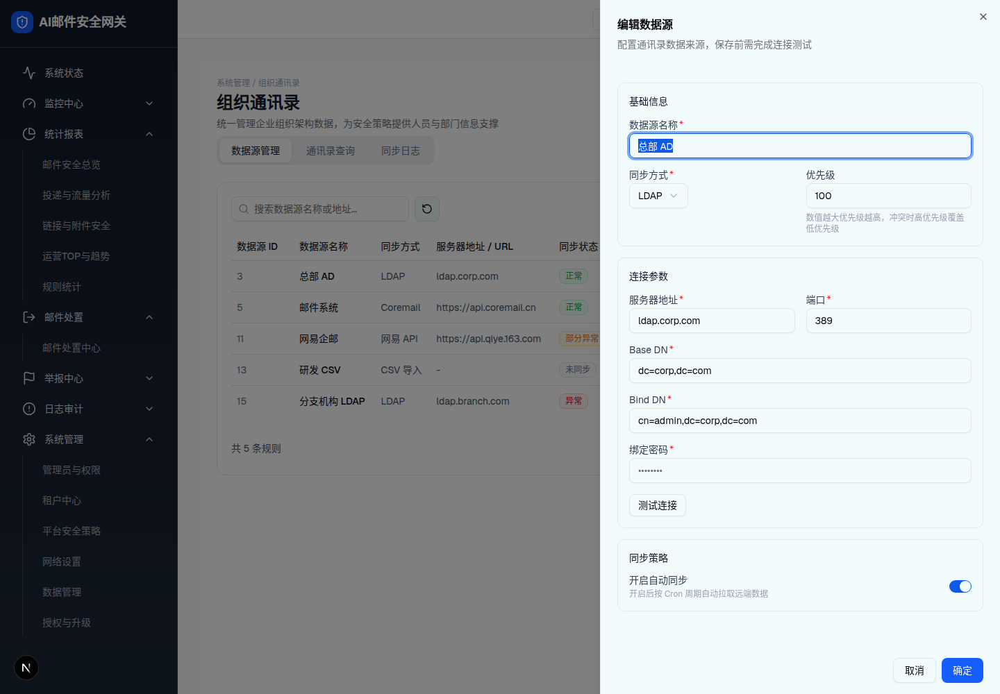

| 所属组件 | 2.2 数据源管理 Tab |
| 触发路径 | 层级0 行内「编辑」（实测第 1 行「总部 AD」）→ 同一抽屉组件，标题变「编辑数据源」 |
预览可操作：校验与 Switch 同层级 2（编辑模式下重名校验对照排除自身）；密码字段以「••••••••」占位（不回显明文）；修改任意字段后测试状态回 idle，需重新测试后才能保存（demo save() 同一闸门）；「确定」通过后 toast「数据源已更新」。

| 项 | 规格（浏览器实测） |
|---|---|
| 标题/描述 | 「编辑数据源」/ 描述同新增 |
| 回显 | 全部字段回显；绑定密码 input 值为空、placeholder「••••••••」（不传输/不回显明文，仅在用户输入时才更新） |
| 同步方式 | 可切换（切换后连接参数区块随之替换，测试状态重置） |
| 保存 | toast「数据源已更新」；列表原位更新（不置顶） |
| 比对项 | demo 实际 DOM | 嵌入的 HTML | 是否一致 |
|---|---|---|---|
| 根节点 | [role=dialog][data-slot=sheet-content] | 同（s5 快照） | 一致 |
| 节点数 | 67 | 67 | 一致 |
| 标题 | 「编辑数据源」 | 同 | 一致 |
| 密码占位 | placeholder="••••••••"，value 空 | 同 | 一致 |
| 打开时校验错误 | 无（回显数据全部合法 → 与新增态的两条红字形成对照） | 同 | 一致 |